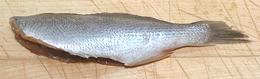

This fish is native to the west coast of North America, most common off Southern California and fading out north of California and midway down Baja California. It can be told from most similar croakers by lack of a barbel under the lower lip. It can grow to 16 inches, but is commonly under 10 inches. The photo specimen was 7-3/4 inches and weighed 2-7/8 ounces. This fish is IUCN Red Listed NT (Near Threatened) due to declining numbers of adult fish.
More on Croakers and Drums.
|

|
This is a good eating fish, except for the size. It's a bit too small to fillet, so best to pan dress it and pan fry or poach it in that state. I usually pan fry with a light dusting of rice flour to keep it from sticking. Use simple light sauce that won't mask the moderate flavor of the off-white flesh. I usually use my Lemon Wine Sauce for fish. I always eat small fish like this with pointy chopsticks. This makes finding pin bones and the like easier, but some will still get through and have to be removed from the mouth. Buying: This fish sometimes appears in the Philippine fish markets here in Los Angeles, close to it's center of the fish's population. It will not be found in most of North America due to its limited range and modest numbers. Pan Dressing: Forget your filleting knife, it isn't the right tool for this fish. You need a sharp pare of kitchen shears.
Fillet: This fish is really too small to fillet, but I've done it for the measurements. It fillets fairly easily, if you are good at working delicately on small objects. When you get to the ribcage, you can probably just pull the fillet off the ribs, then remove any still in the fillet with long nose pliers. The ribs are long, thread thin, and slant sharply towards the tail. Yield: A 2-7/8 ounce fish yielded 1-1/8 ounces of skin-on fillets (39%). I made no attempt to skin the fillets. Pan dressed, your effective yield would be a little higher. Skin: Skin shrink is severe and does not immediately relax. On the other hand, it doesn't have strong adhesion, so you can fry fillets skin-on if you cook most of the way through before turning skin side down. Pan dressed fish can be pan fried, deep fried or even poached without problems. The skin shrink will just stretch open the body cavity a bit.
Stock: Because this fish is almost always cooked pan dressed, there isn't much to make stock with except heads. I did not give that a try. |